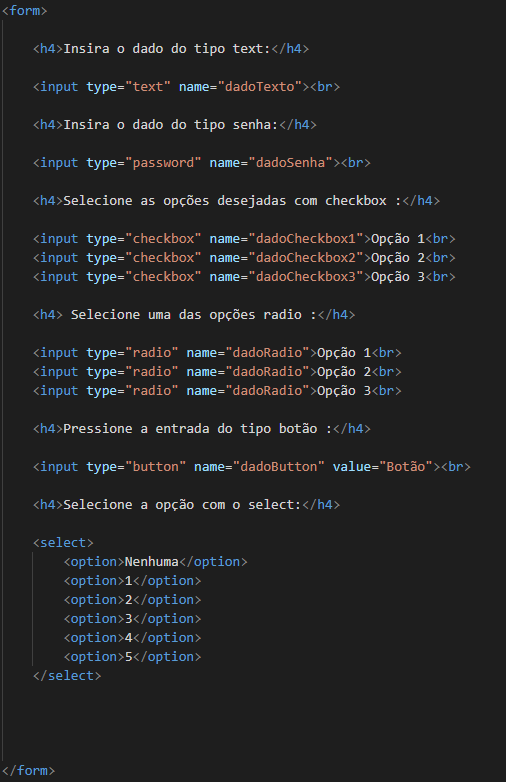
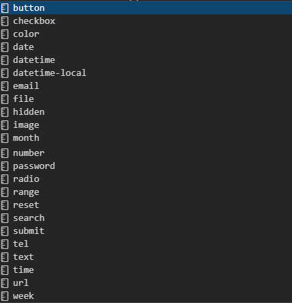

Formulários estão presentes em todos os logins e em outras formas de receber informações do usuário, sendo assim uma ferramenta muito útil para os desenvolvedores web:
Para programar isto, precisamos usar a tag forms e seus inputs:
há uma grande diversidade de inputs, como os que usamos a cima e como os da lista a baixo:
Apesar de ser muito usado em observações, é possível usar a tag textarea para dar a opção do usuário escrever algo: